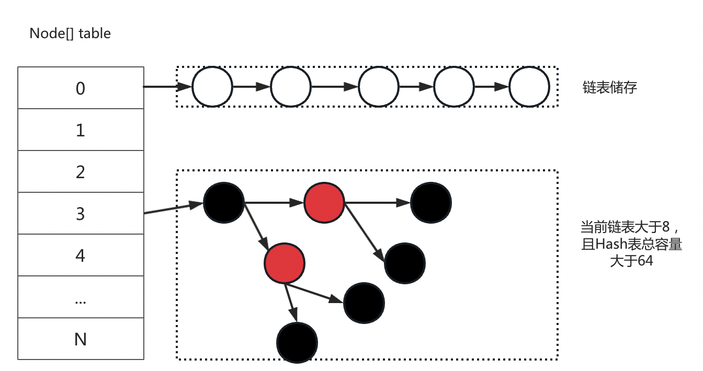

本文包含HashMap源码解析、LinkedHashMap源码解析以及如何构建LinkedHashMap。
HashMap源码阅读，涉及到一些二进制的用法以及意义也会进行说明。LinkedHashMap源码以及实现思路进行解析，并说简单构建一个自己的LinkedHashMap。HashMap采用了hash表的数据结构进行实现，在key未存在hash冲突的情况下，搜索的时间复杂度为O(1)。其最多允许一个key为null，允许value为null。
为了解决hash冲突的问题，JDK1.8的HashMap采用数组+链表+红黑树的数据结构进行实现。当发生Hash冲突的时候，会以链表的形式挂到对应的数组下面。当链表的长度达到一定数量（TREEIFY_THRESHOLD默认值为8）时，会把尝试将链表转为红黑树（为什么说尝试，是因为判断此时Hash表元素的总数量要大于MIN_TREEIFY_CAPACITY（默认值为64），否则链表长度达到TREEIFY_THRESHOLD之后会进行扩容操作）。
HashMap数据结构，如下所示：

在开始阅读源码之前，我们先捋清楚下面的几个名词：
哈希表：指HashMap。
哈希桶：指Node[] table即哈希表的底层数组结构，参考上图。
哈希表的容量：元素的总个数。
哈希桶的容量：数组的容量。（哈希桶的容量是大于等于元素的总个数的！）。因为HashMap 会根据加载因子（load factor）决定是否需要进行扩容。加载因子是指当前 HashMap 中元素个数与数组容量的比值，默认为0.75。比如默认初始化哈希桶为16，此时的加载因子即位12，所以当判断元素个数大于12的时候就会产生扩容的行为（所以默认数组的容量一般是大于等于元素个数的）。
下面对几个重要的属性进行说明。
//哈希桶默认的容量 static final int DEFAULT_INITIAL_CAPACITY = 1 << 4; // aka 16 //哈希桶最大的容量2^30 但是我们知道int的最大取值范围是2^31-1 , 因为涉及到后面许多的位运算操作，比如取余操作就只能在2^n的形势下才可以使用，故最大的2^n即位30，所以不能渠取到int类型的最大值 static final int MAXIMUM_CAPACITY = 1 << 30; //默认的加载因子 static final float DEFAULT_LOAD_FACTOR = 0.75f; //转化成红黑树的阈值，当哈希桶的链表结点数量大于等于8时，尝试转化成红黑树，如果此时hash表中的元素少于MIN_TREEIFY_CAPACITY，则是扩容 static final int TREEIFY_THRESHOLD = 8; //如果当前是红黑树结构，那么当桶的链表结点数量小于6时，会转换成链表 static final int UNTREEIFY_THRESHOLD = 6; //最小可转换为红黑树的哈希表容量 static final int MIN_TREEIFY_CAPACITY = 64;几个重要的属性
xxxxxxxxxxint threshold; // 所能容纳的key-value对极限 哈希桶*加载因子int modCount; // 修改次数int size; // 元素总数量final float loadFactor; // 加载因子Node 用于哈希冲突之后，以链表的形式链接，故是一个单链表
xxxxxxxxxxstatic class Node<K,V> implements Map.Entry<K,V> { final int hash;//hash值 final K key;//key V value;//value Node<K,V> next;//下一个node值 ...}如果需要转换为红黑树，则会将Node转换为TreeNode
xxxxxxxxxx//为了实现LinkedHashMap的逻辑，故LinkedHashMap自身扩展的前后节点static class Entry<K,V> extends HashMap.Node<K,V> { Entry<K,V> before, after; Entry(int hash, K key, V value, Node<K,V> next) { super(hash, key, value, next); }}//基于LinkedHashMap.Entry 继续扩展的TreeNode节点static final class TreeNode<K,V> extends LinkedHashMap.Entry<K,V> { TreeNode<K,V> parent; // red-black tree links TreeNode<K,V> left; TreeNode<K,V> right; TreeNode<K,V> prev; // needed to unlink next upon deletion boolean red; ...}四个构造器，一个一个进行分析
无参构造器
仅仅设置了加载因子为0.75
xxxxxxxxxxpublic HashMap() { this.loadFactor = DEFAULT_LOAD_FACTOR; // all other fields defaulted}指定哈希桶容量的构造器
xxxxxxxxxxpublic HashMap(int initialCapacity) { this(initialCapacity, DEFAULT_LOAD_FACTOR);}传入了哈希桶的容量，并且引出了第三个构造器
指定哈希桶以及加载因子的构造器
xxxxxxxxxxpublic HashMap(int initialCapacity, float loadFactor) { if (initialCapacity < 0) throw new IllegalArgumentException("Illegal initial capacity: " + initialCapacity); if (initialCapacity > MAXIMUM_CAPACITY) initialCapacity = MAXIMUM_CAPACITY; if (loadFactor <= 0 || Float.isNaN(loadFactor)) throw new IllegalArgumentException("Illegal load factor: " + loadFactor); this.loadFactor = loadFactor; this.threshold = tableSizeFor(initialCapacity); }在上面对容量做了一些边界处理，然后设置了加载因子的值和哈希表的阈值，这里在设置阈值时，则调用了tableSizeFor函数对容量做一些处理。
这里将哈希桶的容量设置给了threshold，只是为了暂存，在第一次put的时候会判断调用扩容的方法，会进行具体的设置。
而tableSizeFor函数则返回的是传入值满足最大的2^n的值。比如输入的值是9则返回的是8。
为什么要这么操作呢？
以为HashMap是通过Hash值来定位到对应的数组的，如何定位呢？即将Hash值对数组的长度进行取余，余数为多少，则放到对应的位置。但是取余操作可以通过k&(n-1)来进行计算。但必须满足n为2的次方。同时在进行扩容操作时，分离链表活着红黑树时，也通过位运算来快速的判断是否需要进行数组下标的改变。
批量添加元素的构造器
xxxxxxxxxx public HashMap(Map<? extends K, ? extends V> m) { this.loadFactor = DEFAULT_LOAD_FACTOR; putMapEntries(m, false); } final void putMapEntries(Map<? extends K, ? extends V> m, boolean evict) { int s = m.size(); if (s > 0) { if (table == null) { // pre-size //计算哈希桶的容量 //哈希表的容量 = 哈希桶容量*加载因子； //现在知道哈希表的容量为s，故哈希桶的容量为 哈希表的容量/加载因子。+1 是为了排除小数点因素。 float ft = ((float)s / loadFactor) + 1.0F; int t = ((ft < (float)MAXIMUM_CAPACITY) ? (int)ft : MAXIMUM_CAPACITY); if (t > threshold) //同理使用tableSizeFor函数保证哈希桶的数量 threshold = tableSizeFor(t); } else if (s > threshold) resize();//由于此时哈希表还没有初始化，故不会走这里 for (Map.Entry<? extends K, ? extends V> e : m.entrySet()) { K key = e.getKey(); V value = e.getValue(); putVal(hash(key), key, value, false, evict); } } }Map的size，计算此时的哈希桶的容量，暂存到threshold之中。putVal函数进行添加。put 是hashmap核心方法之一，下面我们分析一下put函数的流程。
当我们调用put函数时，会调用下面这个函数，首先调用hash函数进行了哈希值的计算。之后调用了putVal函数，
xxxxxxxxxxpublic V put(K key, V value) {//调用hash函数计算key的hash值return putVal(hash(key), key, value, false, true);}
首先调用了hash函数计算key的哈希值计算。我们看一下具体怎么计算的
xxxxxxxxxx//其计算过程首先拿到key的hashCode，并且将haseCode与其高16位异或的结果static final int hash(Object key) {int h;return (key == null) ? 0 : (h = key.hashCode()) ^ (h >>> 16);}
这么做的好处是可以将hashcode高位和低位的值进行混合做异或运算，而混合之后低位就加入了高位的信息。这样高位的信息就变相的保留了下来，大大增加了hash值的随机性。
那么为什么要把高位信息保留到低位呢？
有了hash值如何定位到哈希桶的下标呢？通过将hash值对哈希桶长度取余的来，那么二进制是这么计算的(hash&(size-1))，我们知道size一定是符合2^n的，所以size-1的二进制形式一定是前n-1位为1，高位为0。
所以其实取的就是hash值的前n-1位的值，为最终的取余结果。
xhash结果为01111100 10101001 11001101 01010110//8 的二进制为00000000 00000000 00000000 00001000//8-1 的二进制为00000000 00000000 00000000 00000111//最终计算结果为 (hash&(size-1)) hash值的后三位 即00000000 00000000 00000000 00000110因为大部分情况下，哈希桶的容量几乎都到不了高16位，故将哈希值的高位和低位进行混合进行异或运算，增加hash值的随机性。
接下来我们重点看一下putVal的方法：
xxxxxxxxxx final V putVal(int hash, K key, V value, boolean onlyIfAbsent, boolean evict) { Node<K,V>[] tab; Node<K,V> p; int n, i; if ((tab = table) == null || (n = tab.length) == 0) //首次进行putVal，哈希表还没有初始化，需要扩容，调用resize进行扩容 n = (tab = resize()).length; //(n - 1) & hash 计算下标 if ((p = tab[i = (n - 1) & hash]) == null) //下标为null，代表没有hash冲突，直接调用newNode函数构建一个新的节点，放入哈希桶之中 tab[i] = newNode(hash, key, value, null); else { //产生hash冲突的处理，默认直接进行添加处理，如果存在需要替换的key，则进行value替换。 Node<K,V> e; K k; if (p.hash == hash && ((k = p.key) == key || (key != null && key.equals(k)))) //当前位置的key和需要放入的key是一样的，直接拿到当前节点 e = p; else if (p instanceof TreeNode) //如果是红黑树，则通过调用红黑树的putTreeVal去处理，putTreeVal（如果找不到key冲突的，则新建一个树节点加入树中，返回null；否则返回对应的节点） e = ((TreeNode<K,V>)p).putTreeVal(this, tab, hash, key, value); else { //走到这个分支代表是链表，则进行遍历，如果新添加e为null，否则就是找到的key的值。 for (int binCount = 0; ; ++binCount) { if ((e = p.next) == null) { p.next = newNode(hash, key, value, null); //新添加一个节点之后判断是否需要转换为红黑树。 if (binCount >= TREEIFY_THRESHOLD - 1) // -1 for 1st //treeifyBin 不一定转换为红黑树，因为需要哈希表的容量大于MIN_TREEIFY_CAPACITY（64），否则就是扩容。 treeifyBin(tab, hash); break; } if (e.hash == hash && ((k = e.key) == key || (key != null && key.equals(k)))) break; p = e; } } //存在一样key的节点 if (e != null) { // existing mapping for key V oldValue = e.value; //put方法onlyIfAbsent为false，故直接替换value值即可。 if (!onlyIfAbsent || oldValue == null) e.value = value; //替换之后调用 afterNodeAccess(e); return oldValue; } } //如果是新增，则modCount进行+1 ++modCount; //判断是否需要扩容 if (++size > threshold) resize(); //插入后调用 afterNodeInsertion(evict); return null; }总结一下put方法干的事情
如果是首次调用，则进行扩容操作
根据hash值计算在哈希桶的位置，判断是否存在hash冲突
如果是添加，则判断是否需要进行扩容，modCound进行++
有那几种情况会触发扩容呢？其实有四种，下面我一一进行列举一下：
put/putAll操作可以触发到putVal进行判断如果哈希桶没有进行初始化，则进行扩容。putAll函数增加的元素个数大于threshold。putVal添加一个元素之后，判断是否大于threshold。putVal向链表中添加一个元素之后，该链表数量大于TREEIFY_THRESHOLD，但是哈希桶总数小于MIN_TREEIFY_CAPACITY。
下面分析扩容部分的源码实现。
扩容算是比较核心的功能了，其中会有比较有意思的二进制操作，后面也会进行提到。
但是扩容方法比较复杂，这里面分成两部分进行介绍。
xxxxxxxxxx final Node<K,V>[] resize() { Node<K,V>[] oldTab = table; //old 容器size int oldCap = (oldTab == null) ? 0 : oldTab.length; //old 阀值 如果是首次指定哈希桶大小的初始化 它是传入的哈希桶的值 int oldThr = threshold; int newCap, newThr = 0; //...构建新的哈希桶 //...合并哈希桶 return newTab; }首先初始化了几个属性oldCap oldThr newCap newThr，需要注意的是，如果是首次指定哈希桶大小的初始化，那么传入的哈希桶的大小会先给到threshold即oldThr暂存，下面就会使用的到。
构建新的哈希桶
xxxxxxxxxx if (oldCap > 0) { //非首次扩容，会进入到这里，首先是边界值的判断处理 if (oldCap >= MAXIMUM_CAPACITY) { threshold = Integer.MAX_VALUE; return oldTab; } //newCap 扩大到之前容器的一倍，即二进制左移一位。 else if ((newCap = oldCap << 1) < MAXIMUM_CAPACITY && oldCap >= DEFAULT_INITIAL_CAPACITY) newThr = oldThr << 1; // 如果老的容器大于默认值，则直接也将阀值扩大一倍即可 ， 否则在下面会按照新的容器计算阀值 } else if (oldThr > 0) // 首次初始化，会执行到这里，将暂存到threshold的大小给到newCap； newCap = oldThr; else { // 无参构造器初始化，直接给默认值 newCap = DEFAULT_INITIAL_CAPACITY;//16 newThr = (int)(DEFAULT_LOAD_FACTOR * DEFAULT_INITIAL_CAPACITY);//16*0.75 } if (newThr == 0) { //如果新的阀值还没有值，比如指定大小的初始化，以及初始化之后老的容量小于16，则重新计算阀值 float ft = (float)newCap * loadFactor; //新的阈值=默认容量*默认加载因子，即新的阈值为16*0.75=12 newThr = (newCap < MAXIMUM_CAPACITY && ft < (float)MAXIMUM_CAPACITY ? (int)ft : Integer.MAX_VALUE); } //赋值新的阀值 threshold = newThr; ({"rawtypes","unchecked"}) //构建新的哈希桶 Node<K,V>[] newTab = (Node<K,V>[])new Node[newCap]; table = newTab;构建新的哈希桶这个过程中，整体就是将容量以及阀值都扩大到原来的两倍。
如果是指定哈希桶容量的初始化或者当前容量小于16的情况下，则通过新的容量*加载因子的方式计算最新的阀值；
否则如果是无参构造函数初始化则直接给新的容量为16，新的阀值为12。
否则直接将当前容量和阀值均扩大一倍。
合并哈希桶
xxxxxxxxxx if (oldTab != null) { //遍历老的哈希桶，放到新的哈希桶中 for (int j = 0; j < oldCap; ++j) { Node<K,V> e; if ((e = oldTab[j]) != null) { oldTab[j] = null; if (e.next == null) //如果不存在哈希冲突，则直接计算在新的哈希桶中的坐标位置 newTab[e.hash & (newCap - 1)] = e; else if (e instanceof TreeNode) //该函数首先遍历红黑树，依据(e.hash & oldCap)区分为loHead和hiHead两个链表，loHead这个链表的index下标(index)不需要变化，而hiHead的下标则为（oldCap+index），同时该函数会判断如果新的链表红黑树数量小于等于6，则会转换为链表结构 ((TreeNode<K,V>)e).split(this, newTab, j, oldCap); else { // preserve order //同理，如果是链表也根据(e.hash & oldCap)区分为loHead和hiHead两个链表，然后进行对应的赋值 Node<K,V> loHead = null, loTail = null; Node<K,V> hiHead = null, hiTail = null; Node<K,V> next; do { next = e.next; if ((e.hash & oldCap) == 0) { if (loTail == null) loHead = e; else loTail.next = e; loTail = e; } else { if (hiTail == null) hiHead = e; else hiTail.next = e; hiTail = e; } } while ((e = next) != null); if (loTail != null) { loTail.next = null; newTab[j] = loHead; } if (hiTail != null) { hiTail.next = null; newTab[j + oldCap] = hiHead; } } } } }合并哈希桶核心思路就是遍历老的哈希桶的值，如果没有哈希冲突则直接根据新的容器大小计算对应的位置进行赋值，如果冲突则根据(e.hash & oldCap)区分两个赋值链表，两种情况，一种是原位置不动，另一种即位原位置+老哈希桶容量。
重点：(e.hash & oldCap)区分两个赋值链表的原理？
我们知道计算在一个哈希桶位置的二进制算法为(hash & ( size - 1))。
新的容器一定是老的容器的一倍同时满足2^n，所以新的容器大小在二进制的表现的形式为老的容器左移一位
比如：oldCap ： 00001000；newCap：00010000；。
所以：oldCap - 1 ： 00000111；newCap - 1：00001111；
即：oldCap对应的哈希桶的下标即位哈希值的后三位，newCap对应的哈希桶的下标即位哈希值的后四位；而前三位的值就是当前的下标index，第四位的值即为oldCap的大小。而具体第四位是否有值则根据哈希值来判断，如果对应位置哈希值为1，则代表有，否则就是没有，而哈希值第四位是有有值，恰巧可以通过(hash & oldCap)==0进行计算，如果是0，则代表没有值，否则有值。
所以如果(hash & olCcap)==0则新的位置则为index，否则则为oldCap+index。
以此分为两个链表
为什么不需要担心重新计算之后冲突的问题？都是新的哈希桶直接被赋值，为什么不怕冲突呢？
通过上面分析我们知道在原来位置的值，要不为原位置不动，要不为原位置加上老哈希桶的大小。而他们原来的位置不会冲突，所以计算之后的下标在新的位置一定是不会进行冲突的。
接下来来分析一下get方法。
xxxxxxxxxx public V get(Object key) { Node<K,V> e; return (e = getNode(hash(key), key)) == null ? null : e.value; }实际上是调用了getNode方法，接下来我们看getNode方法。
xxxxxxxxxx final Node<K,V> getNode(int hash, Object key) { Node<K,V>[] tab; Node<K,V> first, e; int n; K k; //根据(n - 1) & hash定位找到具体的节点 if ((tab = table) != null && (n = tab.length) > 0 && (first = tab[(n - 1) & hash]) != null) { if (first.hash == hash && // always check first node ((k = first.key) == key || (key != null && key.equals(k)))) //第一个节点直接为所要找的节点，那么直接返回第一个节点 return first; if ((e = first.next) != null) { if (first instanceof TreeNode) //如果是树节点，则按照红黑树的方式进行查找 return ((TreeNode<K,V>)first).getTreeNode(hash, key); do { //链表循环查找 if (e.hash == hash && ((k = e.key) == key || (key != null && key.equals(k)))) return e; } while ((e = e.next) != null); } } return null; }getNode就比较简单了，首先根据key来获取下标，找到当前key对应的节点：
这个方法也会经常用到，我们看一下它是怎么实现的
xxxxxxxxxx public boolean containsKey(Object key) { return getNode(hash(key), key) != null; }其实内部实现和get方法是一样的，只是返回值不一样。
所以我们使用containskey判断是否存在，然后在get其实是调用了两次，不如直接get然后在判断是否为null。
常用的是remove函数，这里我们就看remove函数
xxxxxxxxxx public V remove(Object key) { Node<K,V> e; return (e = removeNode(hash(key), key, null, false, true)) == null ? null : e.value; }我们可以看到内部调用了removeNode函数，我们继续看removeNode函数
xxxxxxxxxx final Node<K,V> removeNode(int hash, Object key, Object value, boolean matchValue, boolean movable) { Node<K,V>[] tab; Node<K,V> p; int n, index; //和getNode类似，首先查找到对应的Node节点 if ((tab = table) != null && (n = tab.length) > 0 && (p = tab[index = (n - 1) & hash]) != null) { Node<K,V> node = null, e; K k; V v; if (p.hash == hash && ((k = p.key) == key || (key != null && key.equals(k)))) node = p; else if ((e = p.next) != null) { if (p instanceof TreeNode) node = ((TreeNode<K,V>)p).getTreeNode(hash, key); else { do { if (e.hash == hash && ((k = e.key) == key || (key != null && key.equals(k)))) { node = e; break; } p = e; } while ((e = e.next) != null); } } //分情况进行删除操作 if (node != null && (!matchValue || (v = node.value) == value || (value != null && value.equals(v)))) { if (node instanceof TreeNode)//红黑树删除 ((TreeNode<K,V>)node).removeTreeNode(this, tab, movable); else if (node == p)//代表头节点即为要找的节点，直接替换 tab[index] = node.next; else p.next = node.next;//等于链表的下一个 //更新操作次数和哈希表的容量，返回删除的节点 ++modCount; --size; afterNodeRemoval(node); return node; } } return null; }大概流程如下：
HashMap的遍历是无序的，其顺序是哈希桶从左往右，链表从上往下依次进行遍历的
下面我们就看一下Iterator是如何实现的:
一般的使用方式：
xxxxxxxxxx Iterator<Map.Entry<String, MMKV>> iterator = kvs.entrySet().iterator(); if (iterator.hasNext()) { final Map.Entry<String, MMKV> next = iterator.next(); final MMKV value = next.getValue(); ...具体看一下EntrySet#iterator的实现即可
xxxxxxxxxx public Set<Map.Entry<K,V>> entrySet() { Set<Map.Entry<K,V>> es; return (es = entrySet) == null ? (entrySet = new EntrySet()) : es; } final class EntrySet extends AbstractSet<Map.Entry<K,V>> { ... public final Iterator<Map.Entry<K,V>> iterator() { return new EntryIterator(); } ...返回了EntryIterator对象，所以具体我们看EntryIterator对象即可。
xxxxxxxxxx final class EntryIterator extends HashIterator implements Iterator<Map.Entry<K,V>> { //next 方法其实调用了nextNode public final Map.Entry<K,V> next() { return nextNode(); } } abstract class HashIterator { Node<K,V> next; // next entry to return Node<K,V> current; // current entry int expectedModCount; // for fast-fail int index; // current slot HashIterator() { //构建时，会得到当前的modCount expectedModCount = modCount; Node<K,V>[] t = table; current = next = null; index = 0; if (t != null && size > 0) { // 初始化第一个有值的节点 do {} while (index < t.length && (next = t[index++]) == null); } } public final boolean hasNext() { return next != null; } final Node<K,V> nextNode() { Node<K,V>[] t; Node<K,V> e = next; //为什么会抛ConcurrentModificationException异常，因为在遍历的过程中，直接调用了hashmap的remove/put等等 if (modCount != expectedModCount) throw new ConcurrentModificationException(); if (e == null) throw new NoSuchElementException(); //依次取链表的下一个节点 if ((next = (current = e).next) == null && (t = table) != null) { //链表取完之后，继续遍历哈希桶，寻找下一个部不为null的位置 do {} while (index < t.length && (next = t[index++]) == null); } return e; } //在遍历的过程中，调用迭代器自身的remove是没有问题的 public final void remove() { Node<K,V> p = current; if (p == null) throw new IllegalStateException(); if (modCount != expectedModCount) throw new ConcurrentModificationException(); current = null; K key = p.key; removeNode(hash(key), key, null, false, false); //为什么没有问题，因为它自己修正了期望的修改次数。 expectedModCount = modCount; } }从上面我们会发现，实际上会构造一个HashIterator对象，并赋值哈希桶上第一个不为null的链表头给next，iterator.hasNext的操作其实就是判断当前的next是否为null,在nextNode中next会被赋值下一个节点，返回的是当前的节点。
HashMap的遍历是无序的，其顺序是哈希桶从左往右，链表从上往下依次进行遍历的